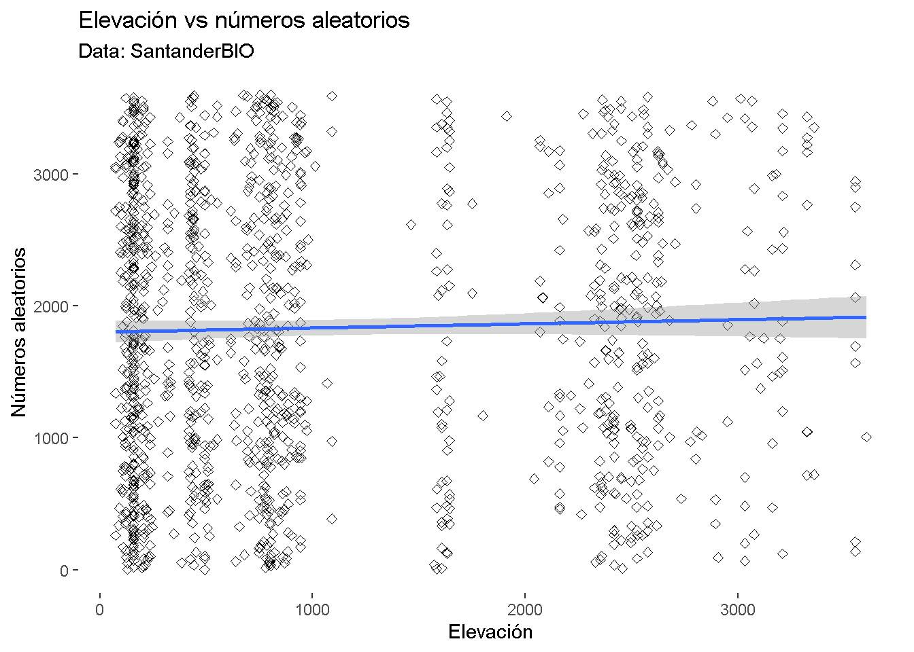

Chapter 8 Análisis de varianza - ANOVA
En esta sesión vamos a aprender a realizar el test de análisis de varianza o ANOVA. Mediante esta prueba, se busca encontrar si hay diferencias significativas entre las medias de dos grupos. Para poder calcularla, se tendrán en cuenta dos tipos de varianza: 1) La varianza entre grupos (los valores promedio de cada grupo se comparan con la media total de los datos); y la varianza dentro del grupo (la varianza de cada dato en un grupo con el promedio dentro del mismo grupo).
Vamos a aprender primero como realizar la anova a mano paso a paso y luego utilizaremos la función de ANOVA en R.
8.0.1 Anova a mano
Vamos a generar nuestros datos para hacer una Anova a mano. Supongamos que estamos experimentando con un tratamiento que permita a las plantulas de una planta crecer más rápido. Para esto tendremos dos grupos de plantas de una misma especie, unas a las que se les provea un compuesto “z” el cuál debería acelerar el crecimiento y otros a los que no. Llamaremos al grupo con el tratamiento “z” g1 y el otro grupo g2.
Generamos datos aleatorios del crecimiento de las plantas, la cual es nuestra variable dependiente
g1 <- rnorm(30, mean=10, sd=2) # 30 observaciones (replicas) en donde el crecimiento en promedio es 10, el doble de lo normal
g2 <- rnorm(30, mean=5, sd=2) # 30 observaciones (replicas) en donde el crecimiento en promedio es 5, en ambos grupos la variación en el crecimiento de cada grupo es el mismo, con sd=2
y <- c(g1, g2) # Los concatenamos en un mismo vector
x <- rep(c(1, 2), each = 30) # Creamos la variable de nuestros grupos o variable independiente, el 1 corresponde a las plantulas de g1 y el 2 a los de g2
plot(y)
plot(x, y) # En este punto parecen haber diferencia entre el crecimiento del grupo 1 y 2Ahora empezamos a realizar una ANOVA paso a paso. Para esto, hallaremos la suma de cuadrados y los grados de libertad, pues esto es igual a la varianza
Obtenemos los promedios de cada agrupo y el total, los cuales necesitaremos para hallar la suma de los residuales al cuadrado (suma total de la distancia entre cada observación con la media elevada al cuadrado)
tot.mean <- mean(y) # Obtenemos el promedio de todas la observaciones
# en la grafica:
plot(y, pch=19, col="grey", cex=0.5)
abline(tot.mean, 0, col="grey")
?abline
- starting httpd help server ... done
# a = intercepto, b = pendiente, para una línea horizontal la pendiente (slope) = 0
g1.mean <- mean(g1)
g2.mean <- mean(g2)
lines(c(0, 30), c(g1.mean, g1.mean) , col = "red") # media del grupo 1
lines(c(30, 60), c(g2.mean, g2.mean) , col = "green") # media del grupo 2
Calculamos la suma de cuadrados de los residuos, los cuales se dividen en suma de cuadrados totales (SST); el error de la suma de cuadrados (SSE), que se refiere a la varianza dentro de cada grupo que no se puede explicar; y la suma de cuadrados del tratamiento (SSA) o varianza entre grupos.
Suma de cuadrados total: SST = SSE + SSA
SST <- sum((y - tot.mean) ^2) #Hallamos el SST sumando la resta entre la media de todos los datos con cada observación elevada al cuadradoSuma de cuadrados residual
SSE.g1 <- sum((g1 - g1.mean) ^2) # Realizamos el mismo paso para calcular el SST pero con el subconjunto de datos de cada grupo
SSE.g2 <- sum((g2 - g2.mean) ^2)
SSE <- SSE.g1 + SSE.g2 #Sumamos los SSE de cada grupoSSA
SSA <- SST - SSE En la gráfica: Se dibujan los residuos en vez de las sumas de los cuadrados:
plot(y, pch=19, col="grey", cex=0.5)
abline(tot.mean, 0, col="grey")
lines(c(0, 30), c(g1.mean, g1.mean) , col = "red") # media del grupo 1
lines(c(30, 60), c(g2.mean, g2.mean) , col = "green") # media del grupo 2
segments(1:60, tot.mean, 1:60, y, col="lightgrey")
segments(1:30, g1.mean, 1:30, g1, col="red")
segments(31:60, g2.mean, 31:60, g2, col="green")
A partir de acá, vamos a calcular el estadístico F, el promedio de los cuadrados (MSA Y MSE), los grados de libertad y el valor de p (valor de significancia) para determinar si nuestros grupos son estadísticamente diferentes
MSA = SSA/k-1 Donde k-1 es igual a los grados de libertad
MSA <- SSA/1 #siendo k igual al número de grupos, que en nuestro caso es 2MSE = SSE/k(n-1) Donde k(n-1) es igual a los grados de libertad
MSE <- SSE/58 #en este caso, n es igual a 30 o número de observaciones por grupo8.0.2 Estadístico F
Fval <- MSA/MSE
Fval
- [1] 82.47409Valor de significancia pf = qf(Fval, k-1, k(n-1))
sig <- 1-pf(Fval, 1, 58)
sig
- [1] 9.731105e-13Usualmente, valores pequeños de p provienen de valores de F grandes, y estos a su vez sugieren una varianza mas grande entre grupos que dentro de cada grupo. En nuestro experimento, se puede concluir que la sustancia “z” está teniendo afectando el crecimiento de las plántulas de manera positiva.
Finalmente, podemos usar el R2 para determinar cuanta varianza en nuestros datos (y) está siendo explicada por la variable independiente (x)
R2 = 1 - (SSE/SST)
R2 # es la varianza que puede ser explicada por las diferencias en las medias
- [1] 0.5871125Felicitaciones, hizo una ANOVA por usted mismo(a), paso a paso. De ahora en adelante, puede usar las funciones de R!
Ejercicio 1
- Crear tres vectores de datos aleatorios, cada uno de 40 observaciones que se diferencien por sus valores medias: entre g1 y g2 por un valor de 2 y entre g2 y g3 de un valor de 5, las cuales vienen de una distribución normal con una sd=2. Concatenar ambos vectores.
- Crear un vector “y” en el cuál se repitan tres letras (A,B,C), cada una igual al número de observaciones de cada vector creado en el punto 1.
- Realizar una anova con los vectores creados anteriormente e identificar si la varianza entre los grupos es significativamente diferente.
8.0.3 Anova con funciones de R
En R, usamos la función aov() para hacer una anova rápidamente
?aov()
aov(y ~ x)
- Call:
- aov(formula = y ~ x)
-
- Terms:
- x Residuals
- Sum of Squares 436.9578 307.2911
- Deg. of Freedom 1 58
-
- Residual standard error: 2.301765
- Estimated effects may be unbalancedSi quieremos ver el valor de F y el valor de p, utilizamos la función “summary”
summary(aov(y ~ x))
- Df Sum Sq Mean Sq F value Pr(>F)
- x 1 437.0 437.0 82.47 9.73e-13 ***
- Residuals 58 307.3 5.3
- ---
- Signif. codes: 0 '***' 0.001 '**' 0.01 '*' 0.05 '.' 0.1 ' ' 1Vemos que el valor de F es igual al que calculamos anteriormente, y también el valor de p (Pr(>F)) es significativo y recahzamos la hipótesis nula H0.
Hasta este punto, hemos realizado un anova de una vía, ya que solo determinamos el efecto de una sola variable independiente, lo que es igual a realizar una regresión lineal simple, ya que Anova es un método que ocurre dentro del modelo de la regresión lineal.
summary(lm(y ~ x))
-
- Call:
- lm(formula = y ~ x)
-
- Residuals:
- Min 1Q Median 3Q Max
- -6.4457 -1.2989 -0.1858 1.3737 5.5046
-
- Coefficients:
- Estimate Std. Error t value Pr(>|t|)
- (Intercept) 15.7091 0.9397 16.717 < 2e-16 ***
- x -5.3973 0.5943 -9.082 9.73e-13 ***
- ---
- Signif. codes: 0 '***' 0.001 '**' 0.01 '*' 0.05 '.' 0.1 ' ' 1
-
- Residual standard error: 2.302 on 58 degrees of freedom
- Multiple R-squared: 0.5871, Adjusted R-squared: 0.58
- F-statistic: 82.47 on 1 and 58 DF, p-value: 9.731e-138.0.4 Anova con datos reales
library(tidyverse)
- Warning: package 'tidyverse' was built under R version 4.0.5
- -- Attaching packages --------------------------------------- tidyverse 1.3.1 --
- v ggplot2 3.3.5 v purrr 0.3.4
- v tibble 3.1.4 v dplyr 1.0.7
- v tidyr 1.1.3 v stringr 1.4.0
- v readr 2.0.1 v forcats 0.5.1
- Warning: package 'ggplot2' was built under R version 4.0.5
- Warning: package 'tibble' was built under R version 4.0.5
- Warning: package 'tidyr' was built under R version 4.0.5
- Warning: package 'readr' was built under R version 4.0.5
- Warning: package 'dplyr' was built under R version 4.0.5
- Warning: package 'forcats' was built under R version 4.0.5
- -- Conflicts ------------------------------------------ tidyverse_conflicts() --
- x dplyr::filter() masks stats::filter()
- x dplyr::lag() masks stats::lag()En esta sección vamos a explorar el análisis de anova con un set de datos que contiene información taxonómica de especies vegetales, abundancia e información del diametro promedio de cada especie colectada en diferentes parcelas. Estos datos hacen parte de la fundación COLTREE, la cual se dedica al monitoreo de parcelas permanentes de vegetacion a nivel nacional, con el proposito de comprender el funcionamiento de los bosques en terminos de su productividad vegetal y su relacion con el ciclo del carbono.
dat <- read_csv("Species_Coltree.csv")
- Rows: 7534 Columns: 7
- -- Column specification --------------------------------------------------------
- Delimiter: ","
- chr (5): N_Familia, N_cientifico, Genero, Epiteto, Cod_HaCr
- dbl (2): Parcela, DAP
-
- i Use `spec()` to retrieve the full column specification for this data.
- i Specify the column types or set `show_col_types = FALSE` to quiet this message.Utilizando la función de Anova en R, vamos a evaluar si existen diferencias en el diametro entre los géneros de plantas de una misma familia. En este ejemplo, vamos a trabajar con mas de dos grupos ya que es más frecuente utilizar otra prueba (T-Test) para comparar solo dos grupos.
Escogemos la familia Anacardiaceae
familia <- dat %>%
filter(N_Familia == "ANACARDIACEAE")Visualizamos las medias de los géneros
familia %>%
ggplot(aes(x = Genero, y = DAP)) +
geom_boxplot()
Realizamos la Anova
anova <- aov(familia$DAP ~ familia$Genero)
summary(anova)
- Df Sum Sq Mean Sq F value Pr(>F)
- familia$Genero 2 3847 1923.4 2.746 0.0668 .
- Residuals 184 128863 700.3
- ---
- Signif. codes: 0 '***' 0.001 '**' 0.01 '*' 0.05 '.' 0.1 ' ' 1En este ejemplo, vemos que tenemos un valor de F bajo, y un valor de p>0.05, por lo que concluimos que el diametro entre los géneros de esta familia no difieren entré si significativamente. Sin embargo, con summary no obtenemos información sobre cuáles grupos se están diferenciando o no. Para esto, hacemos uso de una prueba post-hoc o “Tukey’s Honest Significant Differences” (HSD) para ayudarnos a cuantificar cuales grupos difieren entre ellos.
?TukeyHSD()
TukeyHSD(anova)
- Tukey multiple comparisons of means
- 95% family-wise confidence level
-
- Fit: aov(formula = familia$DAP ~ familia$Genero)
-
- $`familia$Genero`
- diff lwr upr p adj
- Spondias-Astronium 7.390421 -27.5649622 42.34580 0.8716087
- Tapirira-Astronium 15.816341 -0.5479194 32.18060 0.0606142
- Tapirira-Spondias 8.425920 -23.2113415 40.06318 0.8042146Podemos ver un valor de p asociado a la interacción entre grupos. Vemos que los géneros que más difieren son Tapirira y Astronium, sin embargo las medias no son significativamente diferente
Ejercicio 2
- Realizar un Anova para evaluar si existen diferencias en el diametro entre las familias de dos parcelas diferentes y realice una prueba post hoc